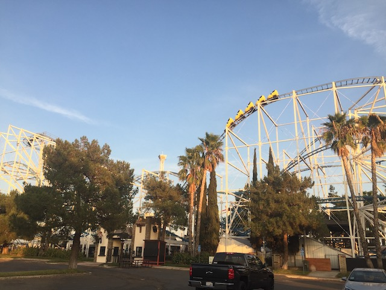
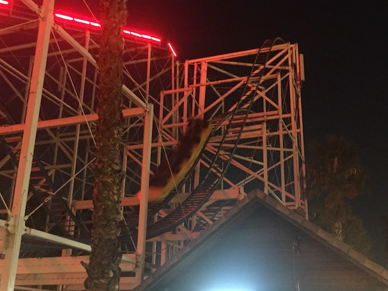

| |
Scandia 2018

All right. I know you want me to go back to the Japan updates and are probably wondering why I'm posting an update about freaking Scandia of all places. Well, the reason I'm here is because when I was in Japan, I learned through social media that Scandia was going to sell off all of their rides. WHAT!!? NO!!! OK, most of them can go and are just standard crap. But I really was unhappy about the idea of Scandia Screamer leaving, and decided that I needed to get my final rides on that when I got back. So yeah. We're back at Scandia.
"Screw anything here! The best part of the day is getting Tokyo Disney Merchandise" (Love that place so much).
Yeah. Eastern California is trashy enough where you have to put up signs telling them that they can't tailgate at freaking Scandia LOL. ;)
Hello Scandia. It's been 4 years since I last visited. Long time. No see.
 And now, it's time for the reason we bothered coming back to Scandia.
And now, it's time for the reason we bothered coming back to Scandia.
 I really missed this ride. Riding this again really reminded me of just how much I like this ride. Reminds me of why I put it on our Top 10 Underrated Coasters List.
I really missed this ride. Riding this again really reminded me of just how much I like this ride. Reminds me of why I put it on our Top 10 Underrated Coasters List.
Hello random fountain.
You know, I haven't done the go-karts here since my first ever visit to Scandia. It'd be good to give those another whirl.
 These aren't your typical crappy go-karts that most FECs have. These are the real freaking deal!
These aren't your typical crappy go-karts that most FECs have. These are the real freaking deal!
"No kid. You can not just stop in the middle of the track for no reason. Keep driving. This isn't a request."
I always enjoy seeing these Screamin' Swings. It's a really good fit for this park. OK. Fine. Hopefully this finds a new home as well.
I am very dissapointed in the Copenhagen Carousel. It just seems like a crappy little carousel. I want more Copengagen god damn it!
"Check out my carousel horse. I've named him Mr. Purple."
 Just a quick reminder that Dippin' Dots are in fact, still a thing.
Just a quick reminder that Dippin' Dots are in fact, still a thing.
Oh. Hello evil bumper boats. Glad to see you're still here (for now).
 You know, after all the visits we've taken here, we've never actually played Mini-Golf here. We should change that.
You know, after all the visits we've taken here, we've never actually played Mini-Golf here. We should change that.
"Aye! Try and get a hole in one in my lucky clover hole!"
Hello Golf'N'Stuff....Oh wait. We're still at Scandia. Sorry, the castle threw me off.
Yeah. I still suck at Mini-Golf. Damn my sh*tty putting!
"Hello. I'm a slide. I'm gonna be plastic scrap soon. Feel sorry for me!"
 Enough doing sh*t that I don't care is leaving! Scandia Screamer marathon time!
Enough doing sh*t that I don't care is leaving! Scandia Screamer marathon time!

I'm really keeping my fingers crossed that Scandia Screamer finds a new home at a small park or some Family Entertainment Center. Any random place. This coaster is freaking awesome, and it totally deserves another chance at life. Hey random FEC, if you want me to give a sh*t about you, buy Scandia Screamer, and this ride is so good, I'll probably swing by to ride it someday.
Just in case you need a quick reminder of why the Scandia Screamer is insane, here's a raw footage video to demonstrate.
Well Scandia, so long. I know you're technically not closing, just selling off all the rides. But with no Scandia Screamer, you're essentially dead to me. Though I have no idea when the rides get sold off. They never announced a closing date. So...if this takes long enough, I may possibly swing by again if they REALLY procrastinate. But assuming that they don't, goodbye Scandia. I always enjoyed visiting, you were a lot of fun, and for gods sake, PLEASE GIVE SCANDIA SCREAMER A NEW HOME!!!!
And afterwards, we swung by McDonalds for dinner. I know I mentioned that I don't want to eat at McDonalds in America anymore after knowing how good Japanese McDonalds is (Spoiler Alert for the next Japan update BTW). But hey, the McRib is back.
It may not be the best McDonalds sandwich, but the McRib is still freaking awesome. =)
Home
|